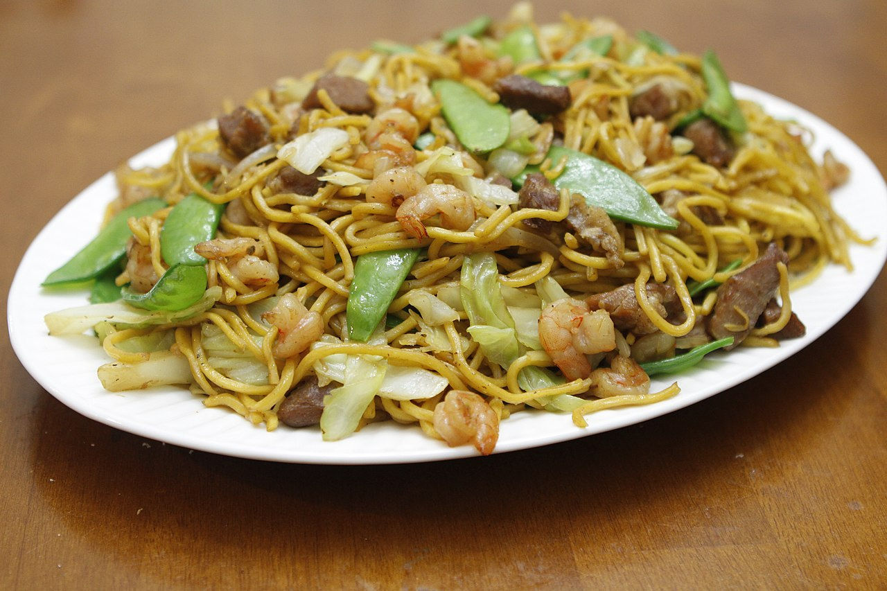

Pancit Recipe

A delicous, fresh tasting noodle dish. You can use bean sprout noodles and/or harusame noodles. Make sure to squeeze lemon or lime before eating for that extra freshness.
Ingredients
- 1 1/2 lbs. chicken with bones and skin on
- 1/2 lb. bihon noodles rice sticks
- 1/2 lb. sotanghon noodles green bean thread
- 1/2 cabbage chopped
- 2 carrots chopped
- 1 Tbs garlic minced
- 1/2 cup flat leaf parsley chopped
- 1 onion sliced
- 3 stalks celery chopped
- 6 cups water
- 1/2 cup soy sauce
- 1/2 tsp ground black pepper
- 2 Tbs cooking oil
Directions
- Pour 6 cups of water in a cooking pot. Let boil. Put-in the chicken and boil for 30 minutes.
- Remove the boiled chicken from the cooking pot. Let it cool down. Shred the meat and discard the bones. Set aside. Note: do not throw the water yet, we will use it later as chicken stock.
- Meanwhile, soak the sotanghon and bihon noodles in water for 10 minutes. Set aside. Note: do this by using a large mixing bowl and fill it with tap water.
- Heat a large pan. Pour-in 2 tablespoons cooking oil.
- Let the oil get hot then stir-fry the cabbage and carrots for 3 to 5 minutes. Remove from the pan and set aside.
- On the same pan, heat the remaining cooking oil. Once the oil becomes smoking hot, saute the onion, celery, and garlic.
- Add the ground black pepper and shredded chicken. Cook for 3 to 5 minutes.
- Pour-in soy sauce and 1 cup of chicken stock (this is the water that was used to boil the chicken). Stir and let boil. Cook for 2 minutes more.
- Add the soaked noodles. Toss the noodles until all the ingredients are well blended. If the noodles is somewhat dry, add a cup of chicken stock and continue to toss until the liquid is absorbed.
- Put in the stire-fried cabbage and carrots. Toss.
- Transfer to a serving plate. Serve with lemon.
- Enjoy!